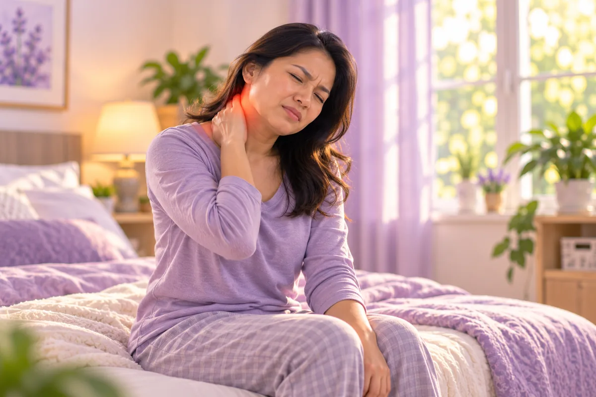
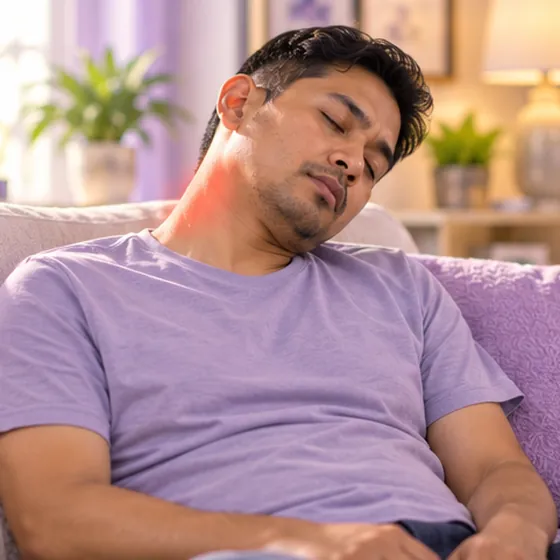
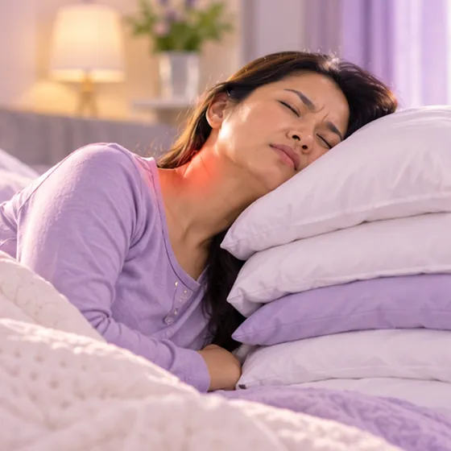
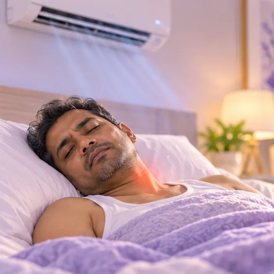
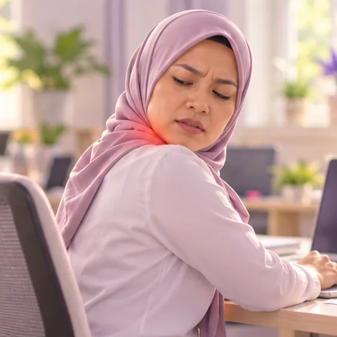
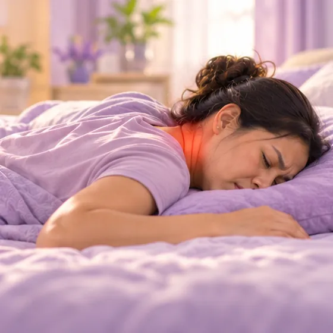
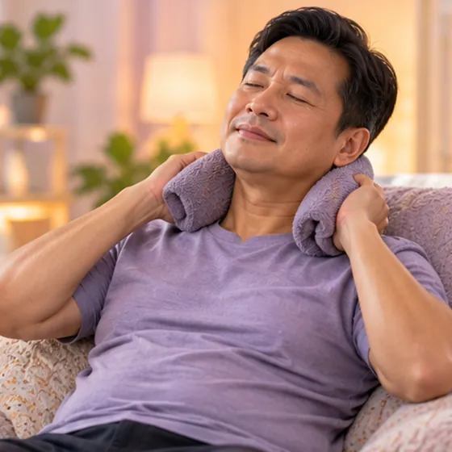
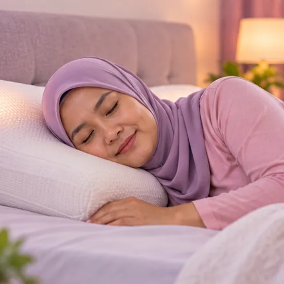
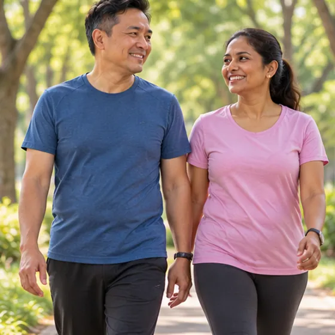

Leher tegang selepas tidur
Sakit dan kaku di satu sisi leher yang tiba-tiba selepas bangun tidur, juga dipanggil leher senget (tortikolis akut)
Apa itu
Sakit dan kaku yang tiba-tiba di satu sisi leher, biasanya disedari selepas bangun tidur, sehingga sukar memalingkan kepala.
- Sisi leher
- Selalunya selepas bangun
- Tajam semasa memalingkan
- Jumpa doktor
- Doktor keluarga, ahli fisioterapi, doktor ortopedik
- Biasa pada
- Remaja dan orang dewasa pelbagai peringkat umur
- Berjangkit
- Tidak
- Perjalanan
- Selalunya reda dalam beberapa hari; kebanyakan pulih dalam kira-kira seminggu
Butiran perubatan
Apa yang berlaku di leher
Leher kaku selepas tidur (leher senget, atau tortikolis akut) ialah kekejangan mengejut otot di satu sisi leher. Selalunya ia melibatkan otot levator scapulae, yang bermula dari bahagian atas leher hingga ke tulang belikat, dan trapezius atas. Kadang-kadang sendi kecil di antara dua tulang leher (sendi faset) juga tertegang. Otot mengetat untuk melindungi leher, jadi kepala dipegang condong ke satu sisi dan memalingkannya terasa sakit dan tersekat. Ia biasanya bermula selepas semalaman dalam posisi yang tidak sesuai, angin sejuk pada leher atau pusingan mengejut, dan kebanyakan orang menyedarinya apabila bangun tidur. Ia biasa, tidak berbahaya dengan sendirinya, dan berbeza daripada kehausan leher jangka panjang.
Corak biasa
- Selepas tidur: posisi yang tidak sesuai, bantal yang tidak sesuai, atau angin sejuk pada leher semasa malam
- Selepas pergerakan: pusingan kepala mengejut, hari yang berat membawa barang, atau leher lama tunduk melihat telefon atau komputer riba
- Berulang kali: leher kaku yang berulang mungkin bermakna leher perlu diperiksa untuk masalah asas, seperti kehausan atau masalah cakera
Prognosis
Kebanyakan leher kaku reda dalam 2 hingga 7 hari, walaupun tanpa rawatan, dan ramai yang jauh lebih baik selepas satu atau dua hari. Jangan paksa leher atau cuba meletupkannya, kerana ini boleh menjadikan kekejangan lebih teruk. Pergerakan lembut dalam julat yang selesa lebih membantu daripada menyimpan leher tidak bergerak. Jika tidak bertambah baik selepas seminggu atau dua minggu, atau terus berulang, jumpa doktor.
Tanda biasa

Sukar memalingkan kepalaPergerakan leher terhad 
Leher kaku dan sengalCervicalgia (sakit leher) 
Sakit di bahuSakit bahu 
Sakit kepala di belakangSakit kepala oksipital
Butiran perubatan
Gejala dengan lebih terperinci
- Sakit di satu sisi leher: sakit tajam atau menarik, selalunya dari bawah tengkorak atau sisi leher hingga ke bahagian atas bahu, biasanya disedari semasa bangun
- Kekakuan: kepala dipegang condong atau berpaling ke satu sisi, dan memalingkannya ke sisi lain terhad dan menyakitkan
- Otot yang tegang: otot di sisi yang sakit terasa keras dan sakit apabila disentuh, kadang-kadang dengan simpulan
- Sengal yang merebak: sengal tumpul ke bahu, belakang atas atau belakang kepala, kadang-kadang dengan sakit kepala ringan
- Tidak biasa: kebas, kesemutan atau kelemahan pada lengan atau tangan, demam atau sakit kepala teruk perlu diperiksa oleh doktor
Mengapa ia berlaku

Posisi tidur yang tidak sesuaiPostur leher yang tidak sesuai berpanjangan 
Bantal yang terlalu tinggi atau kerasKetinggian bantal yang tidak sesuai 
Angin sejuk pada leher atau belakangPendedahan sejuk dan spasme otot 
Pusingan leher secara tiba-tibaTegangan otot akut Hari yang memenatkanKeletihan otot 
Tidur meniarapPutaran leher berpanjangan semasa tidur
Butiran perubatan
Punca dan faktor risiko
- Posisi tidur: tidur duduk di sofa, dalam kereta atau pesawat, atau tidur meniarap dengan kepala berpaling, menyebabkan leher terpusing selama berjam-jam
- Bantal: bantal yang terlalu tinggi, rendah atau keras membengkokkan leher ke sisi atau ke depan
- Angin sejuk: penyaman udara atau kipas yang meniup terus ke leher dan bahu yang terdedah boleh menyebabkan otot mengetat
- Pergerakan mengejut: pusingan kepala yang pantas, sentapan, atau tegangan semasa membawa barang berat
- Otot yang penat: hari yang panjang dan memenatkan, tidur yang kurang, tekanan atau berjam-jam tunduk di skrin menjadikan otot leher lebih mudah kejang
- Faktor risiko: kerja di meja, kecederaan leher terdahulu atau kehausan leher, dan pernah mengalami leher kaku sebelum ini
Jumpa doktor dahulu jika
- Sakit leher selepas jatuh, kemalangan atau kecederaan sukan
- Leher yang sangat kaku dengan demam, sakit kepala teruk atau ruam: ke hospital segera
- Kelemahan, kebas atau kesemutan baru pada lengan atau kaki
- Sukar menelan atau bernafas, atau pening yang teruk
- Sakit dengan dada sesak, berpeluh atau sesak nafas: hubungi 999
- Tidak reda selepas seminggu atau dua minggu, atau terus berulang
Jika mana-mana berkenaan, sila jumpa doktor sebelum sesi.
Teruskan mengambil ubat biasa anda dan terus berjumpa doktor. Sesi kami ialah sokongan lembut dan tidak menggantikan rawatan perubatan.
Butiran perubatan
Bagaimana doktor memeriksa
Perubahan pada imbasan biasa pada orang tanpa gejala, jadi keputusan sentiasa dibaca bersama gejala dan pemeriksaan anda.
- Sejarah dan pemeriksaan: bagaimana ia bermula, tabiat tidur dan kerja anda, kemudian pergerakan leher, otot yang sakit, kekuatan lengan, refleks dan deria
- X-ray atau MRI: biasanya tidak diperlukan untuk leher kaku yang tipikal; digunakan selepas kecederaan, dengan tanda amaran atau gejala saraf, atau apabila masalah tidak reda atau terus berulang
Masalah yang terasa serupa
Kehausan leher (spondilosis servikal), tegangan otot, masalah bahu dan, jarang sekali, jangkitan atau masalah jantung boleh terasa seperti leher kaku, jadi doktor memeriksa untuk membezakannya.
Sakit bersama dada sesak, berpeluh atau sesak nafas boleh menjadi masalah jantung: hubungi perkhidmatan kecemasan (999).
Menjaga diri

Kehangatan lembutHaba permukaan 
Bantal yang sesuaiSokongan tulang belakang neutral Berehat, regangan lembutRehat mikro dan mobiliti 
Berjalan, kekal aktifSenaman aerobik berimpak rendah
Butiran perubatan
Penjagaan harian dengan lebih terperinci
- Kehangatan lembut: tuala hangat atau bungkusan hangat pada sisi yang sakit untuk seketika boleh melegakan otot tegang; pastikan ia hangat dengan selesa, tidak panas
- Terus bergerak dengan lembut: palingkan dan condongkan kepala perlahan dalam julat yang selesa beberapa kali sehari, dan berjalan sebentar; elakkan memaksa, menyentap atau meletupkan leher
- Bantal yang sesuai: bantal yang menjaga leher selari dengan tulang belakang apabila anda berbaring telentang atau mengiring; tidak terlalu tinggi, rendah atau keras
- Posisi tidur: tidur telentang atau mengiring lebih lembut pada leher berbanding meniarap; elakkan tidur duduk di sofa atau dalam kereta tanpa sokongan leher
- Lindungi leher: jangan biarkan penyaman udara atau kipas meniup terus ke leher dan bahu anda; selendang nipis atau baju berkolar membantu
- Pelega sakit: tanya doktor atau ahli farmasi apa yang selamat untuk anda; jangan mula ubat baru sendiri
Beritahu ahli terapi anda
- Lengan kebas atau kesemutan
- Kecederaan atau pembedahan leher baru-baru ini
- Tulang lemah
- Perentak jantung atau implan logam
- Kehamilan
- Pening apabila memalingkan kepala
Ahli terapi anda akan menyemaknya bersama anda sebelum bermula.
Soalan dan jawapan
Apakah Leher tegang selepas tidur?
Sakit dan kaku di satu sisi leher yang tiba-tiba selepas bangun tidur, juga dipanggil leher senget (tortikolis akut). Sakit dan kaku yang tiba-tiba di satu sisi leher, biasanya disedari selepas bangun tidur, sehingga sukar memalingkan kepala.
Apakah tanda biasa Leher tegang selepas tidur?
Sukar memalingkan kepala · Leher kaku dan sengal · Sakit di bahu · Sakit kepala di belakang
Mengapa Leher tegang selepas tidur berlaku?
Posisi tidur yang tidak sesuai · Bantal yang terlalu tinggi atau keras · Angin sejuk pada leher atau belakang · Pusingan leher secara tiba-tiba · Hari yang memenatkan · Tidur meniarap
Bagaimana menjaga diri dengan Leher tegang selepas tidur?
Kehangatan lembut · Bantal yang sesuai · Berehat, regangan lembut · Berjalan, kekal aktif
Bolehkah sesi AI Body Master membantu Leher tegang selepas tidur?
Sesi ialah sokongan meridian tanpa jarum yang lembut untuk kesejahteraan anda. Ia tidak merawat atau menyembuhkan Leher tegang selepas tidur dan tidak menggantikan ubat atau doktor anda. Beritahu ahli terapi anda sebelum sesi bermula.
Keadaan berkaitan
Rujukan: Mayo Clinic: Neck pain; NHS: Neck pain; Cleveland Clinic: Neck pain; NCBI StatPearls: Torticollis
Halaman dikemas kini: 2026-11-01